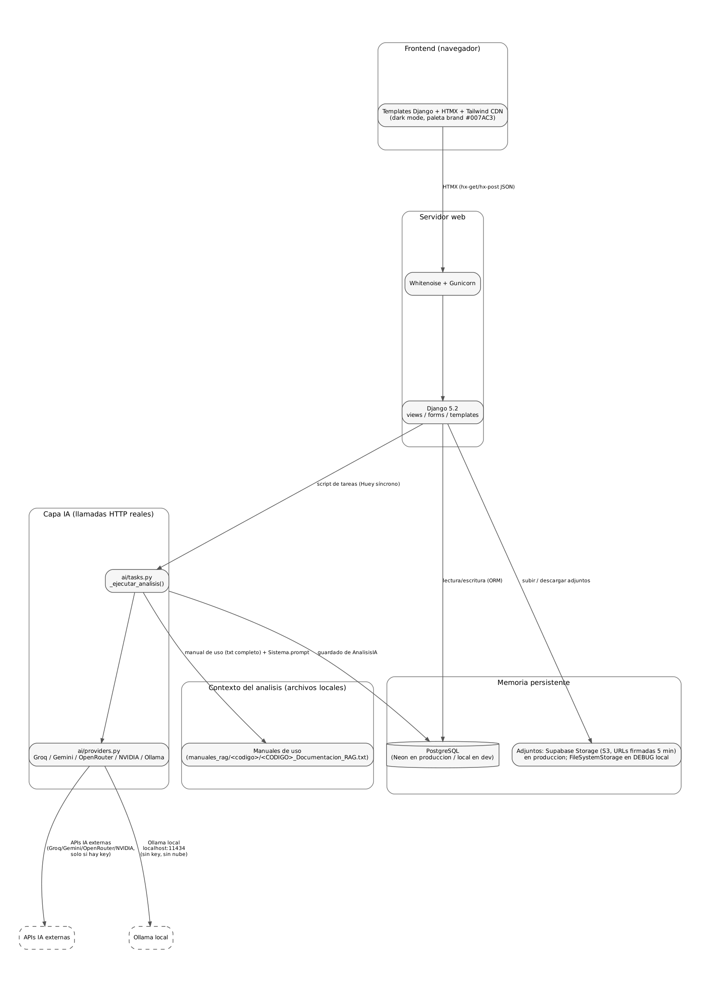
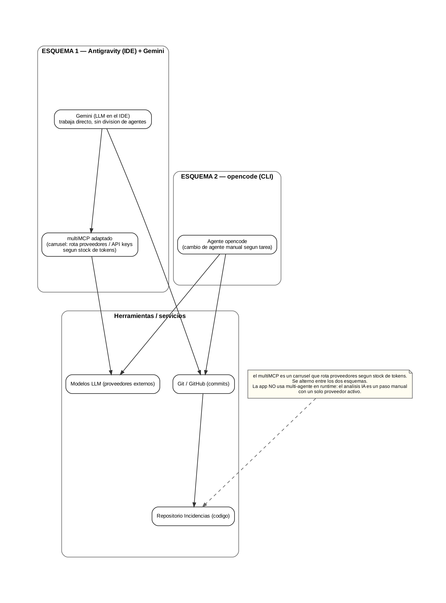
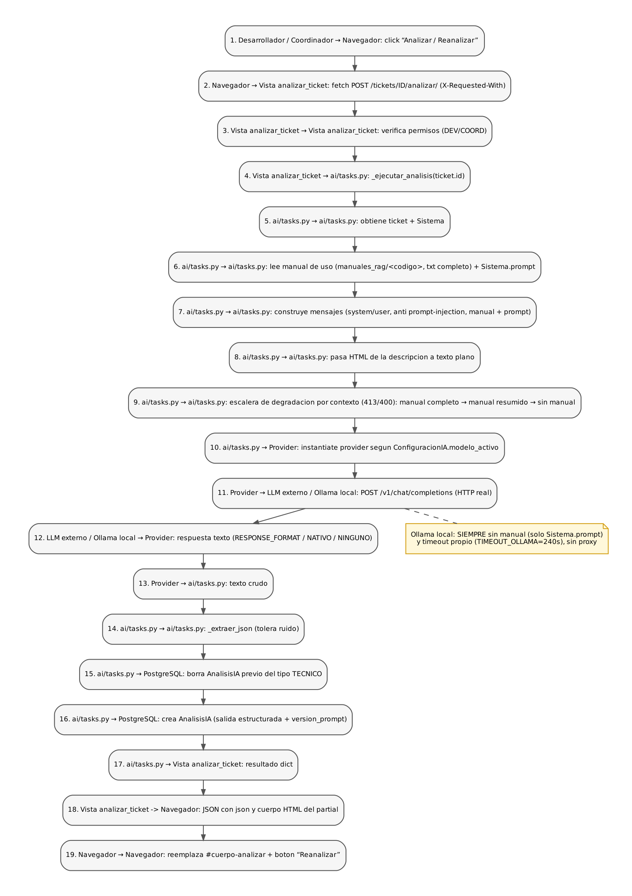
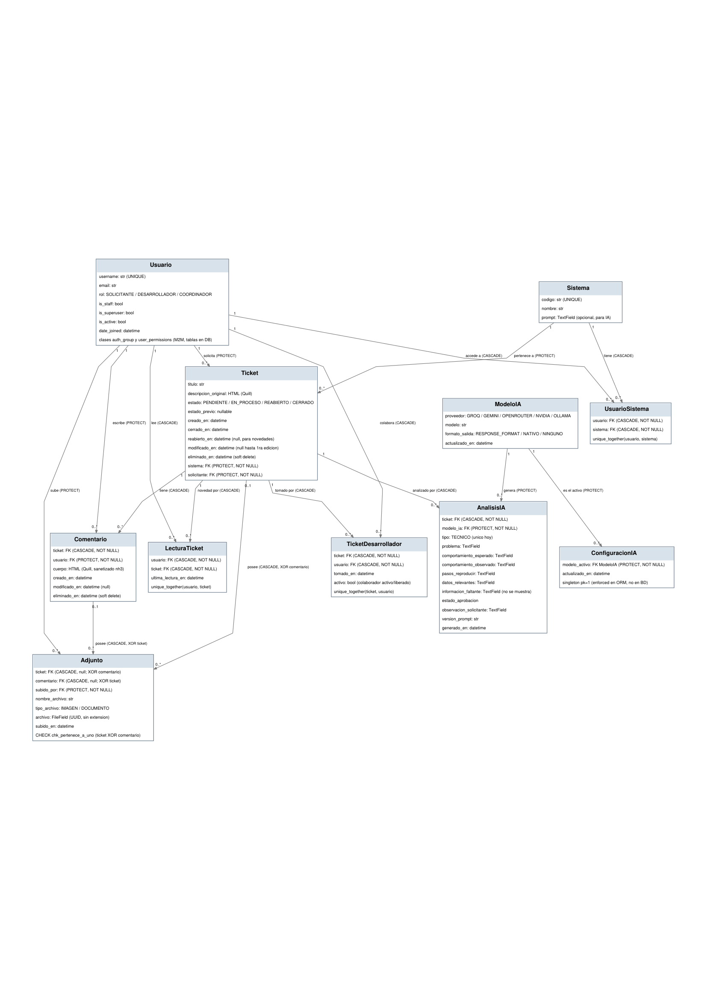
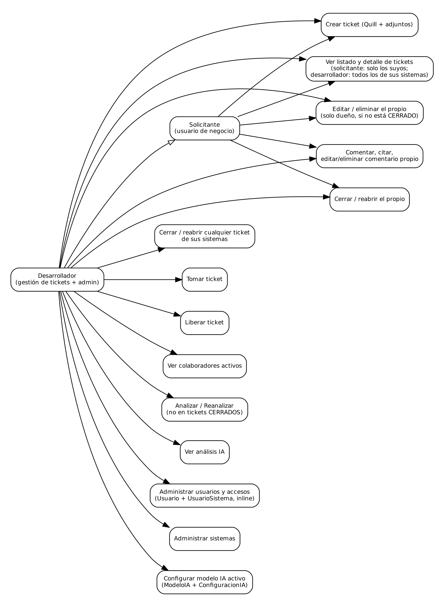
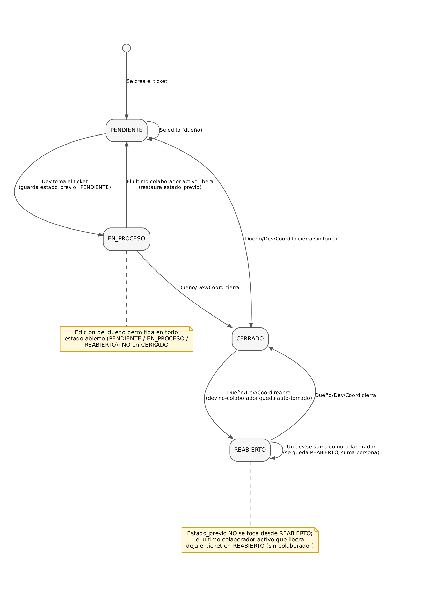
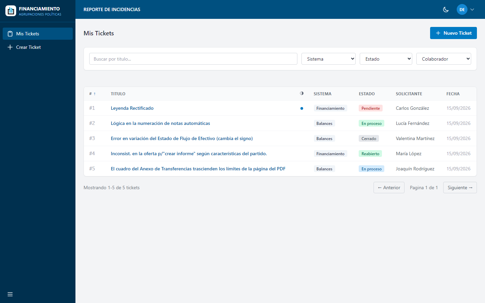
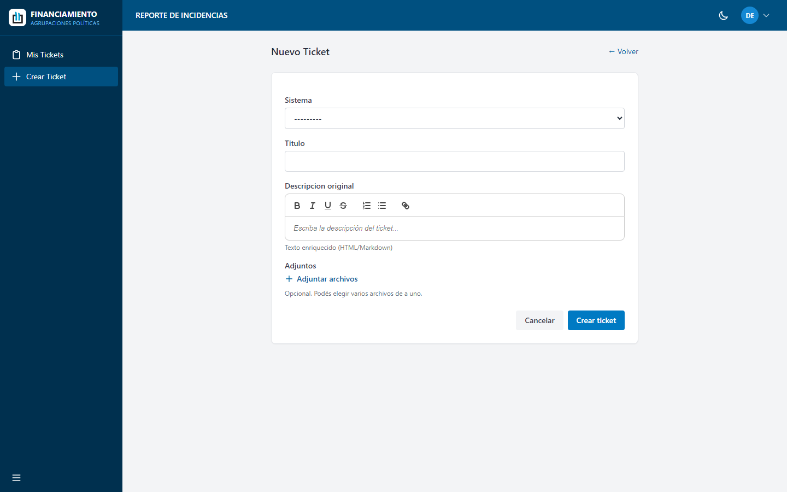
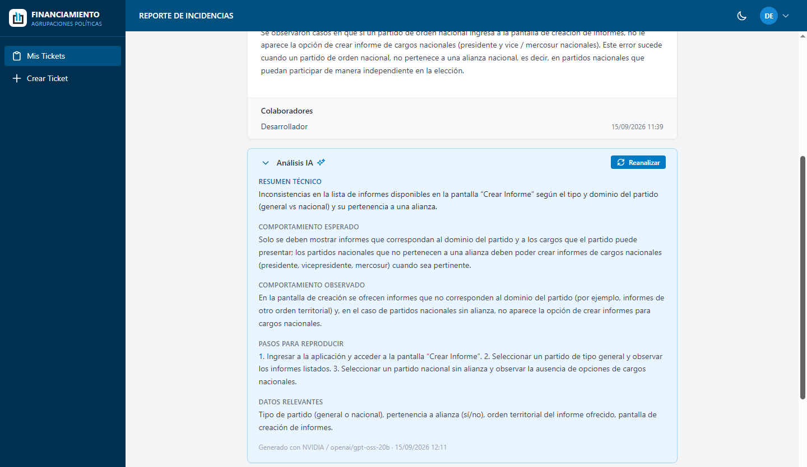
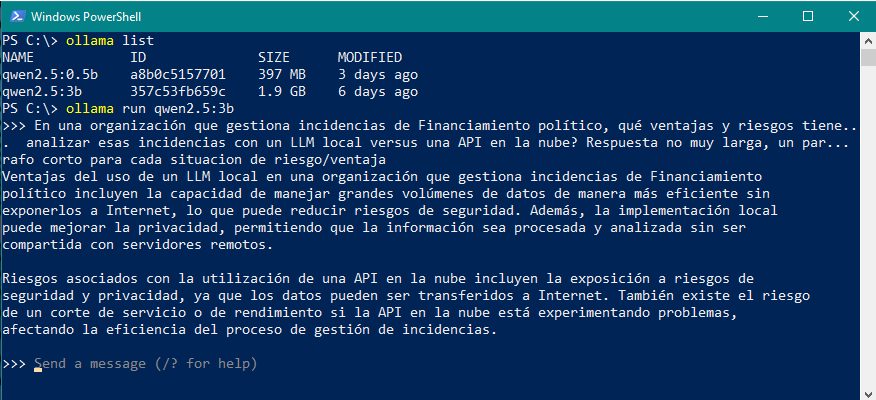

Inteligencia Artificial aplicada a organizaciones
Trabajo de Fin de Ciclo
Entrega final de proyecto
Sistema de Gestión de Incidencias con análisis IA
UTN FRBA — Curso de Inteligencia Artificial para Programadores
Grupo: Patricio Ureta, Daniel Ravi, Juan Pablo Seoane, Ariel Alonso Shannon
Links de acceso directo
| Recurso | URL |
|---|---|
| Repositorio GitHub | https://github.com/patosimple/Incidencias |
| Aplicación en producción * | https://incidencias.onrender.com |
| Video demo | https://youtu.be/7AgJvyjOLZw |
*Nota: el servicio está alojado en el plan gratuito de Render, que puede redeployar de forma automática, a veces la primera carga puede demorar unos segundos en levantar la aplicación.
PARTE 1 — El proyecto como aplicación real
1. Presentación del equipo y del proyecto
Integrantes del grupo:
- Patricio Ureta
- Daniel Ravi
- Juan Pablo Seoane
- Ariel Alonso Shannon
El trabajo lo hicimos de manera conjunta, sin roles especificos por integrante. Fuimos avanzando entre todos en lo que respecta a diseño, analisis, testing, despliegue e infraestructura, sobre las bases del diseño inicial, todo siempre en co-work con agentes IA.
Nombre del proyecto
Sistema de Gestión de Incidencias (con análisis IA asistido).
Problema que resuelve
Gestión interna de bugs y requerimientos sobre dos aplicaciones reales de negocio (Balances y Financiamiento de partidos políticos). Centraliza el reporte, el seguimiento, la toma colaborativa, el cambio de estado y el cierre de incidentes, e incorpora una capa de análisis IA que asiste a los desarrolladores a entender el problema reportado.
Público objetivo
Usuarios internos de la organización: (a) solicitantes, usuarios de negocio que reportan las incidencias y las siguen sin necesidad de detalles técnicos; y (b) desarrolladores, que atienden los tickets de sus sistemas, gestionan el flujo (toma, liberación, cierre y reapertura), corren el análisis IA y además tienen acceso a la administración de usuarios, accesos y configuración de IA. El superusuario conserva esas capacidades de gestión sin restricciones de visibilidad.
2. Arquitectura técnica
Diagrama de arquitectura general
Componentes IA vs lógica tradicional: el núcleo de tickets (crear, listar, comentar, estados, permisos, adjuntos) es lógica tradicional Django. La única componente IA es el módulo de análisis de incidencias (ai/), que se dispara manualmente.

Diagrama de flujo de agentes
El proyecto como aplicación NO incluye orquestación multi-agente en producción: el análisis IA es un paso puntual y manual.
La fase de desarrollo sí se apoyó en esquemas de IA, alternando dos modalidades: opencode con cambio de agente manual por tarea, y Antigravity con Gemini como orquestador sobre un multiMCP adaptado para usar rotación interna de API keys y proveedores. El diagrama siguiente representa esta metodología (las partes de la app están cubiertas en los diagramas funcionales).

UML — Secuencia del análisis IA

UML — Diagrama de clases

UML — Casos de uso

Flujo de estados del ticket

3. Stack tecnológico
| Componente | Tecnología / Herramienta | Por qué esta y no otra |
|---|---|---|
| Frontend | Templates Django + HTMX + Tailwind (CDN), dark mode | HTMX permite interacciones parciales sin SPA ni JS pesado; Tailwind da consistencia rápida con paleta de marca y responsive; CDN evita build complejo. Elegimos esta combinación por sobre React/Vue por simplicidad de mantenimiento server-rendered en un equipo chico. |
| Backend | Python Django 5.2 + Gunicorn + Whitenoise | Django trae ORM, admin, auth y seguridad (CSRF, login) maduros; elegimos Python porque es un lenguaje con el que nos manejamos bien y es idóneo para integrar APIs de IA. Whitenoise sirve estáticos sin servidor aparte. |
| Base de datos | PostgreSQL (Neon/Supabase) | Postgres por integridad (constraints, unique_together, índices) y por pgvector (plan RAG futuro). Neon gratis y con SSL. Almacenamiento de adjuntos persistido en Supabase Storage (S3, ver Despliegue). No SQLite porque el deploy en Render usa disco efímero y la app corre persistida en la nube. |
| Modelo de IA | Multi-proveedor OpenAI-compatible: Groq, Gemini, OpenRouter, NVIDIA; Ollama local. Activo: qwen/qwen3.8-27b (Groq). | Abstracción en ai/providers.py con un único contrato HTTP; permite probar el modelo activo o caer a Ollama local (privacidad). Groq como activo por latencia baja del free tier. |
| Orquestación | Código propio + Huey (cola de tareas; hoy síncrono con immediate=True) | Sin LangChain: la fachada IA es simple y completa (mensajes, formato, reintentos). Huey+PostgresHuey (misma DB, sin Redis) para correr análisis IA en segundo plano en implementación futura en servidor propio. |
| Despliegue | Render (Gunicorn) + Neon (Postgres) + Supabase Storage (S3) | Render gratis con deploy por git; Neon gratis. Los adjuntos van a un bucket S3 privado de Supabase Storage: el disco de Render es efímero y cada redeploy perdería los archivos. Local (DEBUG) usa FileSystemStorage en media/. |
4. Evidencia de funcionamiento
Capturas de pantalla
Las siguientes capturas son pantallas reales de la aplicación desplegada: pantalla principal/home, el flujo de uso principal y el resultado del output de IA visible para el usuario.
(a) Pantalla principal / home — listado de tickets con filtros, paginador e indicador de novedades:

(b) Flujo de uso principal — creación de ticket con editor enriquecido y adjuntos:

(c) Resultado / output de la IA visible para el usuario — sección Análisis IA en el detalle:

Video de demostración
Log de una sesión real
Se incluye en anexo: línea de tiempo de una ejecución completa extraída de la base de datos real (tickets + comentarios + análisis IA con proveedor/modelo/versión de prompt).
========================================================================================
LOG DE SESION REAL — Sistema de Gestion de Incidencias de TI
Exportado el 16/09/2026 13:29 desde la base de datos de la aplicacion.
Linea de tiempo cronologica: sesion de prueba con datos reales (desde las 13:00 hs).
Incluye: creacion de ticket, comentarios con adjuntos, toma/liberacion, analisis IA, cierre.
========================================================================================
16/09/2026 13:11 [11] CREADO ticket #11 "ERROR DE SUMA ALGEBRAICA POR CIFRA NEGATIVA" por María López (sistema Balances). Estado: Cerrado. Descripcion: Esta incidencia es complicada, principalmente porque no tenemos una sospecha certera del problema. Involucra varios rubros que no suman bien en pantalla después de determinada operación con los saldos, pero difiere en los reportes.La principal sospecha, aunque no es concluyente, podría vincularse con cargar un importe con una cifra negativa. Esto no es la forma habitual de operar, ya que si quiero bajar un saldo, lo haría por la columna contraria (una cuenta del haber si se trata de un saldo recomendado del debe y viceversa).Creemos que los usuarios ingresan, en alguna celda o detalle, una suma con un signo negativo adelante y por eso se rompe la suma lógica, mostrándose mal los totales en las cuentas madres respecto de las cuentas hijas.Otra posibilidad es el forzado de estos saldos negativos a través de un modal de carga (AREA, por ejemplo, asume un signo negativo si es un ajuste por gastos, por lo que su signo negativo está implícito y es inevitable)
16/09/2026 13:11 [11] ADJUNTO a ticket #11: María López subio "CIFRA_NEGATIVA_1.jpg".
16/09/2026 13:11 [11] TOMO ticket #11 Desarrollador Demo (colaborador activo).
16/09/2026 13:11 [11] COMENTARIO Desarrollador Demo en ticket #11: "hola, estoy viendo tu caso, me subis alguna captura mas?"
16/09/2026 13:12 [11] EDITADO ticket #11 (titulo/descripcion) por María López.
16/09/2026 13:12 [11] ADJUNTO a ticket #11: María López subio "CIFRA_NEGATIVA_2.jpg".
16/09/2026 13:12 [11] COMENTARIO María López en ticket #11: "Respondiendo a Desarrollador Demo:hola, estoy viendo tu caso, me subis alguna captura mas?listo te agregue la captura que necesitas"
16/09/2026 13:14 [11] ANALISIS IA ticket #11 (tipo TECNICO): modelo Groq/qwen/qwen3.8-27b, version_prompt v6. Problema: Discrepancia en el cálculo de sumas algebricas en la vista de saldos cuando se ingresan importes con signo negativo, afectando la consistencia entre cuentas madre e hijas.
16/09/2026 13:14 [11] COMENTARIO Desarrollador Demo en ticket #11: "perfecto, ya esta solucionado, cierro el ticket"
16/09/2026 13:15 [11] COMENTARIO María López en ticket #11: "vuelvo a reabrir porque quedó funcionando mal, lo podes revisar?"
16/09/2026 13:16 [11] COMENTARIO Desarrollador Demo en ticket #11: "Respondiendo a María López:vuelvo a reabrir porque quedó funcionando mal, lo podes revisar?te pido mil disculpas! revisado y corregido nuevamente. si te parece que esta ok, podes cerrarlo."
16/09/2026 13:17 [11] COMENTARIO María López en ticket #11: "Respondiendo a Desarrollador Demo:te pido mil disculpas! revisado y corregido nuevamente. si te parece que esta ok, podes cerrarlo.ahora si! muchas gracias! cierro el ticket."
16/09/2026 13:17 [11] CERRADO ticket #11 (estado actual Cerrado).
5. Evaluación UX/UI
5.1 Heurísticas de Nielsen aplicadas al proyecto
| Heurística | ¿Cumple? | Evidencia / Observación |
|---|---|---|
| Visibilidad del estado del sistema | Sí | Badges de estado coloreados en listado y detalle (PENDIENTE rojo, EN_PROCESO verde, CERRADO gris, REABIERTO); el color distingue si lo tomó el usuario u otro (verde=yo, azul=otro, rojo=sin tomar). Toasts/flash con feedback; spinner + barra de progreso real en adjuntos. |
| Coincidencia con el mundo real | Sí | Lenguaje del dominio en español (tickets, sistema, solicitante, colaborador); el usuario no ve internals; etiquetas claras en forms y botones con verbos (Tomar, Liberar, Cerrar, Reabrir, Analizar). |
| Control y libertad del usuario | Sí | Cancelar en todos los forms; quitar adjuntos antes de subir; editar/eliminar comentarios y ticket propio; liberar/reabrir para corregir errores; los enlaces vuelven al listado; limpiar filtros. |
| Consistencia y estándares | Sí | Paleta brand única (#007AC3) en toda la app, dark mode coherente, partials reutilizables (badges, cards, página de ticket), mismos patrones de botones por estado, misma metodología de filtros en listado. |
| Prevención de errores | Sí | Validación client-side al seleccionar adjuntos (10MB + whitelist de extensiones con toast), validación de form antes de enviar, botones destructivos con confirmación (SweetAlert2), bloquear submit durante upload, botones contextuales (no aparece 'Tomar' si ya colabora). |
| Reconocimiento sobre recuerdo | Sí | Selects con label placeholder (Sistema/Estado/Colaborador/Novedades), puntito de novedad por fila, filtro 'Tomado' para devs, badges que se explican solos; el usuario no necesita recordar valores. |
| Ayuda y documentación | Sí | Manual de uso dentro de la app (/manual/) con 18 secciones colapsables, TOC de anclas y visibilidad por rol (solicitante ve solo lo general; dev suma toma/IA; staff suma admin); FAQs incluidas. Mensajes de error claros en español. |
5.2 Evaluación orientada al público objetivo
Diseño apropiado para el nivel técnico: el solicitante no ve internals (ni análisis IA ni toma colaborativa); los desarrolladores ven las herramientas de gestión.
Lenguaje visual/textual comprensible: español de negocio, hint de adjuntos y textos de acción verbales. El análisis IA pide solo información que el usuario podría aportar (pantalla, pasos, mensaje de error).
Prueba con usuario real: corrimos escenarios reales con el usuario y de ahí salieron decisiones de UX concretas: toasts in-place para edición/borrado de comentarios en lugar de flash tag, límite de adjuntos en 10 MB (los informes pueden llegar a pesar hasta 6 MB), indicador de novedades como puntito azul (en vez de badge) con toggle en el header, filtros con label placeholder en español.
6. Evaluación de Ciberseguridad
| Riesgo identificado | Tipo (OWASP/privacidad/acceso) | Medida implementada |
|---|---|---|
| Inyección de prompt en el modelo IA | Prompt injection | Prompt separado system/user; el user declara que la descripción del ticket es SOLO dato, podría contener órdenes, que se ignoran, bloque delimitado con """ y defensa explícita en system, el título también se protege. Ninguna instrucción dentro de la descripción modifica la tarea/reglas/formato. |
| Exposición de API keys | Secretos en código | Keys en .env (ignorado en git) propagadas a os.environ en settings; nunca hardcodeadas; .env.example commiteado solo con placeholders. |
| Datos de usuarios almacenados | Privacidad | Modelo mínimo: username, rol, accesos a sistemas; no se guardan datos sensibles extra; contraseñas hasheadas por Django; el análisis IA con datos de Financiamiento político puede correr 100% local con Ollama para no salir de la org. |
| Acceso no autorizado (autenticación/autorización) | Acceso | Login obligatorio (LOGIN_URL), permisos por rol (solicitante ve solo sus tickets; dev ve sus sistemas), verificación server-side (403/404) en tomar/cerrar/reabrir/comentar/analizar; superuser con bypass controlado; soft-delete conserva auditoría. Lo implementamos integralmente. |
| XSS en contenido del ticket/comentarios | OWASP A3 | Sanitización nh3 al guardar (whitelist de tags/atributos Quill) en crear/editar ticket y comentarios; render con |safe es seguro porque el input llega ya saneado; tests E2E de XSS automatizados (XssVistaTest). |
| Adjuntos maliciosos | OWASP A1 (mayormente) | Whitelist de extensiones (imágenes, office, comprimidos) — excluidos ejecutables, .svg, macros de Office y html/xml; límite de 10MB por archivo con validación client y server. |
| CSRF / sesión | OWASP A1/A8 | CSRF middleware activo y token en todos los forms POST (incluidos los HTMX); logout por POST. |
7. IAs usadas en el co-work de desarrollo
Hicimos el desarrollo en dos esquemas combinados: (1) esquema multi-agente con Antigravity + Gemini como orquestador + un multiMCP adaptado para usar rotación interna de API keys y proveedores y (2) opencode con cambio de agente manual por tarea. Ambas modalidades se alternaron a lo largo del desarrollo y se complementaron (no hay un reparto de features por esquema: el mismo hito se pudo abordar desde cualquiera de las dos). El contexto original del proyecto quedó documentado en el archivo AGENTS.md dentro del repositorio, que ambas herramientas leyeron y actualizaron; así el paso de un esquema al otro no perdía la memoria del desarrollo (conceptos, decisiones y pendientes).
| Herramienta IA | Para qué la usamos | Qué nos aportó |
|---|---|---|
| Claude (claude.ai, chat) | Planificación y diseño del sistema (entidades, flujos, esquema de datos) directamente desde el chat de claude.ai, y allí mismo generó el proyecto Django inicial listo para trabajar: estructura del proyecto, modelos, urls y views iniciales, archivos docker y requirements.txt, entregados como .zip. | Sorprendió: el andamiaje completo del proyecto quedó definido y descargable desde el arranque y consistente con el diseño planificado; sobre esa base luego trabajamos con Antigravity (multi-agente) y opencode (agentes manuales). |
| Antigravity + Gemini (orquestador multi-agente) + multiMCP adaptado con rotación interna de API keys y proveedores | Desarrollo de parte del código con esquema multi-agente: varios agentes orquestados por Gemini para generar features del backend y frontend. | Bien: permitió encarar el desarrollo con agentes especializados coordinados por un orquestador. Mal: Limitaciones del multiMCP, en la sesión de prueba varios proveedores fallaron (modelos deprecados, carrusel de proveedores sin saldo, errores 404/410). A pesar de disponer de varias cuentas de mail, ante tareas grandes el orquestador se queda sin tokens. |
| opencode (con cambio de agentes manual) | Generar backend Django, forms, vistas, templates (Tailwind/HTMX/Quill), capa IA multi-proveedor, tests automatizados, debugging | Sorprendió: velocidad de generación de estructura completa y consistente; la suite completa de tests automatizados en Django con la que verificamos cada etapa y la integridad hacia atrás; revisión de bugs con repro (p.ej. scroll de SweetAlert2, orden de serialización HTMX). Los modelos gratuitos funcionan muy bien y rara vez presentan problemas de limitación de tokens. Mal: a veces generaba código con errores sutiles (p.ej. {# #} multilínea renderizado literal, Orden de listeners HTMX) que hubo que corregir con tests. |
Reflexión.
Si lo hubiéramos desarrollado de manera tradicional, la verdad es que todo nos habría tomado muchísimo más tiempo: por ejemplo, todo el armado inicial del proyecto, definición de rutas, modelos, seeds iniciales, suite de tests, templates y estilos — tareas habituales y rutinarias que un agente IA hace rapidísimo y con mucha precisión. Lo mismo para el co-work en diseño de BD, diagramas y análisis de casos de uso en la fase de diseño.
Por otro lado, toda la parte de implementación de un análisis IA de tickets en la propia aplicación no podríamos haberla hecho sin ayuda de agentes de IA: no teníamos experiencia previa en la materia.
A su vez, los agentes IA muchas veces cometen errores, a veces por malinterpretar los prompts, por presuponer situaciones que no aplicaban, o incluso por saturación de contexto (muchas veces se quedaban en loop infinito sobre una misma tarea). Esto requirió constante supervisión y control de nuestra parte, tanto sobre la ejecución de las tareas en código como de los resultados deseados en la app.
PARTE 2 — IA local en tu proyecto
Introducción
La aplicación usa IA para analizar los tickets: un modelo interpreta la descripción de la incidencia y devuelve un diagnóstico estructurado. El proveedor activo por defecto es Groq (baja latencia y buena disponibilidad del free tier), además de otros proveedores cloud; el sistema incluye Ollama local (formato NATIVO, sin key) como opción adicional, y desde el panel de administración se pueden configurar los proveedores cloud y agregar/editar modelos. Como contexto del análisis, el prompt se arma con la descripción del ticket, la descripción oficial del sistema (Sistema.prompt) y el manual de uso del sistema sobre el que se está reportando la incidencia, en texto plano (manuales_rag/<codigo>, leído al momento de analizar); cuando el proveedor es Ollama local el manual se omite para alivianar la consulta (el modelo local corre con contexto acotado). Además incluye un system prompt con la persona, las reglas, el formato de salida y defensa contra prompt injection. La llamada al modelo se gestiona con código propio, y ante fallos transitorios el análisis se reintenta automáticamente. Si el manual completo excede el contexto del modelo, la llamada degrada reutilizando el intento con un manual resumido del sistema y, de persistir, sin manual: el análisis nunca se cae por el tamaño del contexto. Evaluamos dos variantes para incorporar los manuales: RAG vectorial (embeddings locales con nomic-embed-text + pgvector) y enviar el manual completo en el prompt. Elegimos esta última porque los manuales son acotados (BALANCES ~24 KB, FINANCIAMIENTO ~16 KB, ~10-12K tokens) y entran enteros en el contexto: el modelo ve todo el contenido, sin riesgo de fragmentos mal seleccionados por similitud; además evita pgvector, el pipeline de indexado y la carga de un modelo de embeddings en Ollama por análisis. El RAG quedó documentado como plan para escalar a manuales grandes.
Pregunta 1 — Qué papel jugaría un LLM/SLM local
Reemplazaría (o complementaría) la API externa para escenarios sensibles: los tickets de Financiamiento político no deberían salir de la organización. El provider Ollama ya existe en la app: cambiando el modelo activo (ConfiguracionIA) el análisis corre local. Hoy el contexto del análisis ya incluye el manual de uso de los sistemas sobre los cuales se reportan las incidencias (txt completo, sin que los datos salgan de la org); a futuro podría sumarle embeddings locales (nomic-embed-text) para RAG sobre esos manuales. Sería un componente de soporte intercambiable, no el agente principal.
Pregunta 2 — Qué le aportaría al usuario
Privacidad (los datos sensibles no salen de la org), cero costo por token y funcionamiento offline o en red privada. En experiencia, permitiría ofrecer el análisis como garantía por defecto para incidencias de sistemas sensibles, sin depender del estado de un proveedor externo.
Por supuesto que, dependiendo de la infraestructura del servidor y del modelo local elegido, podría haber cierto déficit de velocidad/precisión en la interacción con una IA local frente a modelos cloud más grandes y rápidos.
Pregunta 3 — Qué te aportaría a vos como profesional
Un modelo local nos aportaría información del negocio y del usuario sin que los datos salgan de la organización: patrones de incidencias por sistema y cómo reportan quienes lo usan sin exponer tickets sensibles en la red. En cuanto al desarrollo, además, nos serviría para coworkear con IAs sin límite de tokens ni gasto en cuentas de modelos pagos: podríamos iterar el prompt y probar el pipeline de análisis completo contra el modelo local, gratis y offline. A futuro, el sistema podría correr el análisis del ticket contra una versión vectorizada del código del sistema para el que se reporta la incidencia (RAG), para detectar y sugerir dónde ocurre el error y cómo resolverlo, sin exponer código ni la información de los tickets.
Pregunta 4 — Limitaciones concretas vs API en la nube
La principal limitación es la capacidad del hardware disponible: nuestros equipos de desarrollo no tienen los recursos para correr análisis representativos. En el mejor de los casos, la implementación sobre un servidor de la organización con características superiores permitiría correr el análisis contra un modelo local, pero aun así no compite con los LLMs grandes y potentes de la nube. Además, en las pruebas corridas en los equipos de desarrollo, la calidad del análisis con Ollama local resultó bastante más pobre en la manera de interpretar y analizar el ticket frente a cualquier modelo grande en la nube. A esto se suma el mantenimiento: los modelos locales habría que actualizarlos manualmente en nuestro servidor, a diferencia de las APIs, gestionadas por el proveedor.
Captura de Ollama local
Comando: ollama run qwen2.5:3b
Pregunta: "En una organización que gestiona incidencias de Financiamiento político, qué ventajas y riesgos tiene analizar estas incidencias con un LLM local versus una API en la nube? Respuesta no muy larga, un párrafo corto para cada situación de riesgo/ventaja"
Respuesta del modelo: Ventajas del uso de un LLM local en una organización que gestiona incidencias de Financiamiento político incluyen la capacidad de manejar grandes volúmenes de datos de manera más eficiente sin exponerlos a Internet, lo que puede reducir riesgos de seguridad. Además, la implementación local puede mejorar la privacidad, permitiendo que la información sea procesada y analizada sin ser compartida con servidores remotos.
Riesgos asociados con la utilización de una API en la nube incluyen la exposición a riesgos de seguridad y privacidad, ya que los datos pueden ser transferidos a Internet. También existe el riesgo de un corte de servicio o de rendimiento si la API en la nube está experimentando problemas, afectando la eficiencia del proceso de gestión de incidencias.
